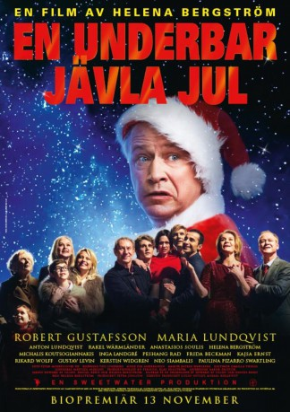

IMDB-Wertung: 5.6 / 10
IMDB-Wertung: 5.6 / 10  Metascore:
Metascore: 
A gay couple invites their somewhat homophobic families to meet for the first time during Christmas celebration. And they have a special gift in store for them.
 IMDB-Wertung: 5.6 / 10 Metascore:
A gay couple invites their somewhat homophobic families to meet for the first time during Christmas celebration. And they have a special gift in store for them.
Jahr: 2015
Dauer: 108 Minuten
FSK: 0
Land: Schweden Studio: Arsenal FilmverleihTonspuren:
Untertitel:
Auflösung: 720p (1280x536) Größe: 2631 MB
Genre: Komödie, Weihnachten
Regisseur: Helena Bergström
Drehbuch: Helena Bergström
Soundtrack: Per Andréasson
Darsteller:
Datei: X:\2015(N-Z)\Schöne Bescherung, Eine (2015, FSK0, 1280x536).mkv seit 15.12.2017
Festplatte: HD 2015(A-Z)
 Es gibt insgesamt 161 Filme in der Gruppe '2015(N-Z)'
Es gibt insgesamt 161 Filme in der Gruppe '2015(N-Z)'